« L'édition de pièces de théâtre la plus parfaite jamais publiée » : vers une
numérisation de Lacy's Acting Edition.
Lou Burnard
L'édition la plus parfaite jamais publiée
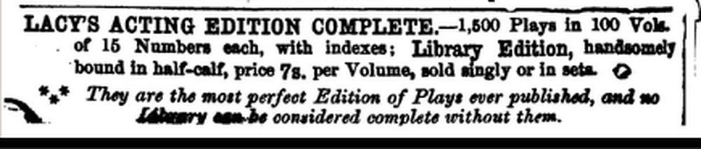
C'est quoi, une "Acting edition" ?
C'est qui, Thomas Hailes Lacy ?
L'édition considérée comme corpus numérique
Modalités du travail de construction
Etat actuel du corpus.
Acting edition: le concept
Edition des œuvres dramatiques au XIXe siècle: une activité marginale
Les droits d'auteur était en transition: au début du siecle, imprimer une pièce était la meilleure méthode d'assurer qu'elle soit piratée
Toute représentation théatrale devrait etre licenciée par un office d'état (le Lord Chamberlain's Office)
Toute représentation théatrale nécessitait paiement d'une redevance au ayant-droit: soit un éditeur comme Lacy, soit la Society of Dramatic Authors
Avec de rares exceptions, l'édition des pièces de théatre destinée au "lecteur dans son cabinet" n'était plus rentable entre 1830 et 1890.
Par contre, les éditeurs vendait beaucoup de "Acting Editions" sous deux formats
la pièce individuelle à 6 pence
le volume relié à 7 shillings
Une pièce individuelle
prix modeste
sans reliure, papier bon marché, imprimée en minuscules caractères
public ciblé: acteurs professionels et amateurs
disponibilité tres répandu
Des productions à petit budget, purement utilitaires, conçues pour faciliter l’expérience théâtrale complète, mais en aucun cas pour la remplacer.
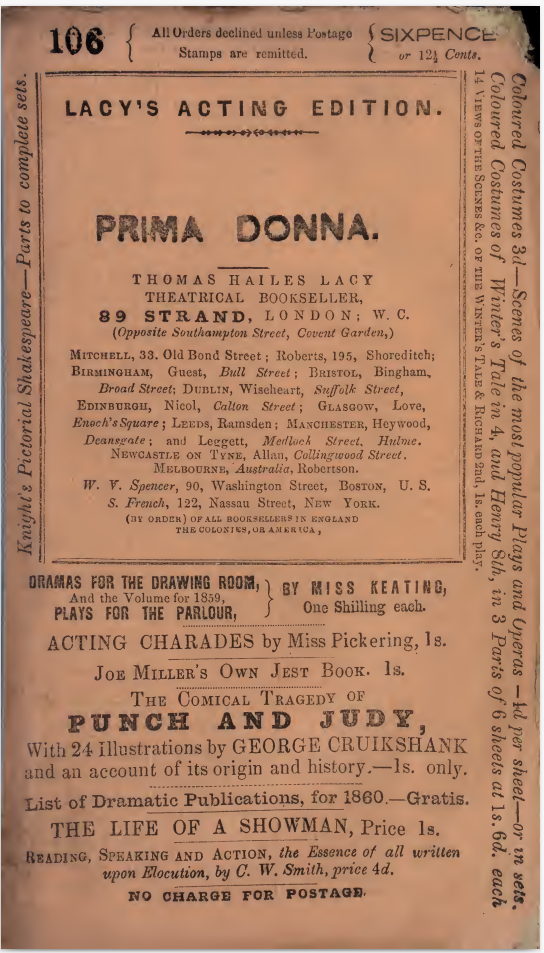
L106
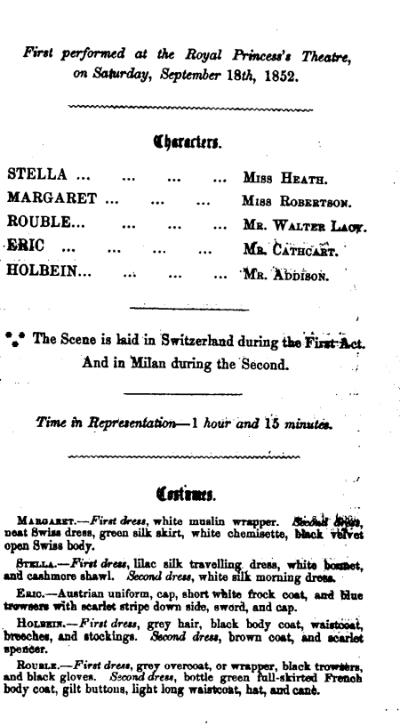
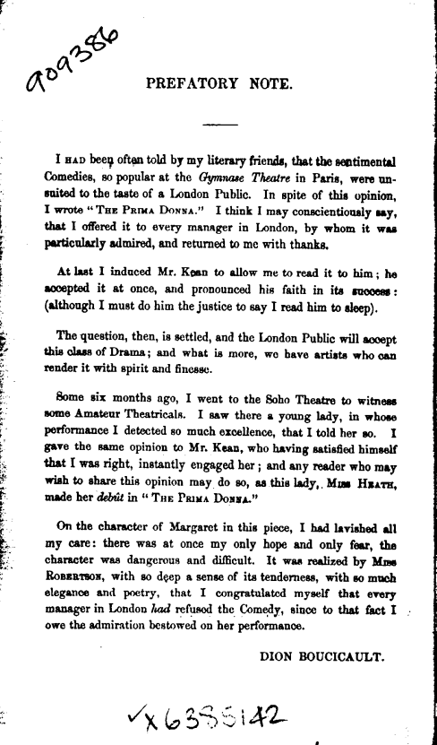
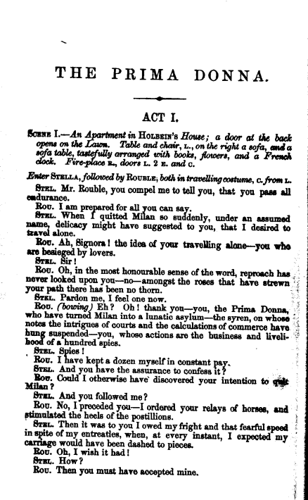
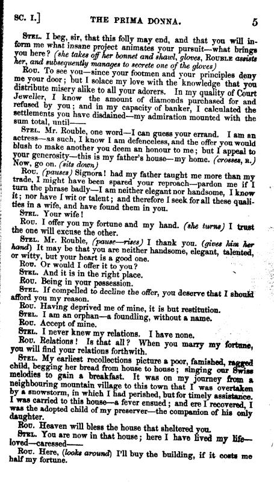
Un volume relié
prix moins modeste (selon reliure)
public ciblé: collectionneurs respectables; l'amateur du theatre des classes moyennes
100 volumes sont parus entre 1848 et 1873
chacun contenant 15 titres variés,
chaque volume restait disponible le long du siecle, avec des réimpressions selon demande
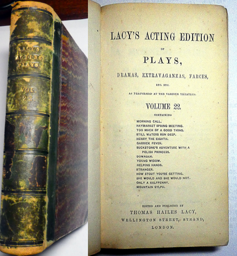
Thomas Hailes Lacy (1809-1873)
Éditeur et dramaturge, Lacy s'est lancé en ecrivant une poignée de pièces sans distinction pour les petits théâtres de Londres. Sa conjointe etait une actrice à succès modéré. En 1851, il s'installe comme éditeur de pièces de théâtre au 89 Strand et crée une série intitulée Lacy's Acting Editions.
Avec d'autres séries concurrantes, (Cumberland, Duncombe, Richardson, Dicks ..) Lacy's représentait presque la seule façon dont les pièces étaient publiées après environ 1830, suite à la disparition du marché pour les octavos liés à 3 ou 5 shillings.
Lacy achetait les droits d'auteur de l'auteur pour une petite somme, parfois aussi basse que 5 £ ou 3 £, puis collectait des redevances auprès d'amateurs et de professionnels pour toutes les pièces de ses listes: une affaire tres rentable. La série de Lacy a été reprise par son ami new-yorkais Samuel French dans les années 1860 et se poursuit encore aujourd'hui.
Le paysage dramatique du 19e siecle : un aperçu quantitatif
Grace aux travaux d'Allardyce Nicoll dans son A history of English Drama 1660-1900 (CUP 1959), nous disposons d'un bilan très complet des représentations théatrales: ca. 25 000 représentations entre 1800 et 1900 y sont énumerées. Ces notices dérivent principalement
des archives du Lord Chamberlain's Office
des revues contemporaines
des affiches théatrales
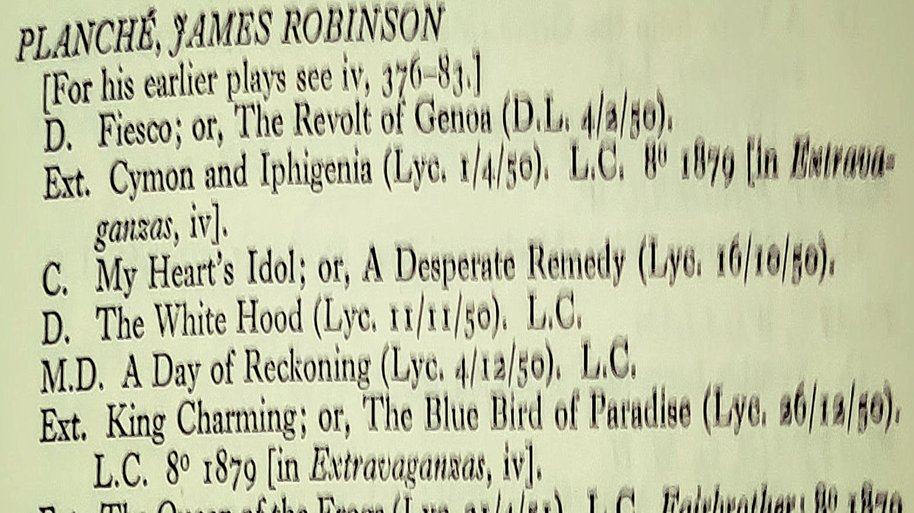
Chaque notice contient:
le nom d'un (ou plusieurs) auteur
une indication de genre
un titre (ou plusieurs)
la théatre ou lieu et la date de la première représentation
des informations sur le licencement
détails de publications eventuelles
d'autres remarques
(Une version bien structurée en TEI est en cours...)
La théatre imprimée
La vaste majorité des représentations constatées par Nicoll n'ont aucune version imprimée ou publiee
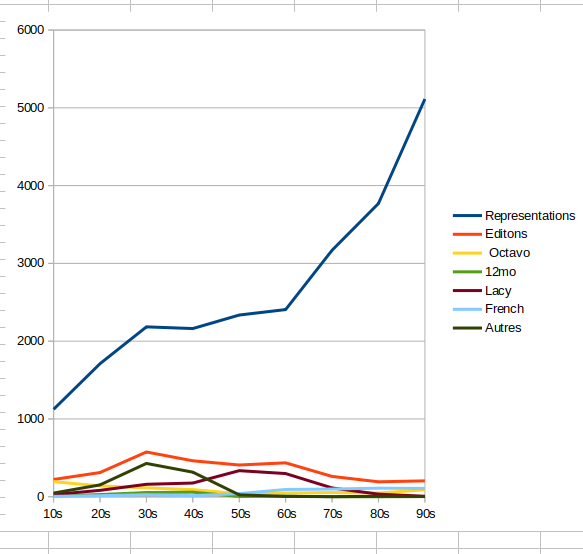
Pour les 3 000+ representations associées avec un texte imprimée, les Handlists nous indiquent son format d'édition, nous permettant de distinguer les produits de Lacy, de French, et des autres éditeurs.
A son apogée, Lacy est responsable de 80% des publications théatrales
Sa domination du marché (jusqu'aux 70s) correspond avec une diminution en l'usage des formats classiques (octavo, duodecimo)
Caracteristiques du corpus
Si on considère la LAE comme échantillon de la production totale théatrale, attestée par les Handlists de Nicoll, une question de recherche importante serait:
A quel point peut on considérer la LAE représentative du théatre de son époque?
Pour répondre à cette question, il faut une investigation de quelques paramètres mesurables, tels que ...
la taille des pièces
la "fraicheur" des textes
le genre des pièces
l'origine des pièces
des propretés de l'auteur (sexe, renommée, age ...)
coût/complexité de production théâtrale
Taille de pièce
Nicoll ne fournit aucune indication précise des tailles des pièces énumérées dans ses Handlists. Pourtant:
La taille d'une pièce, en "actes" ou en pages, semble varier directement avec son type (drame, farce, etc.) : le nom utilise pour le type implique une taille relative (par ex. comedietta vs comedy, burletta vs burlesque etc.)
Les drames sérieuses et les tragédies nécessitaient au moins 3, 4, ou 5 actes i.e. vers 50 pages; les farces et les petites comédies beaucoup moins (entre 10 et 50 pp)
Jusqu'aux 80s, une soirée théatrale typique nécessitait une grande pièce avec une ou deux petites pièces d'accompagnement
La taille d'une pièce (no. des actes) déterminait ses bénéfices financières -- à l'auteur, au licenseur -- et bien sur son prix de production
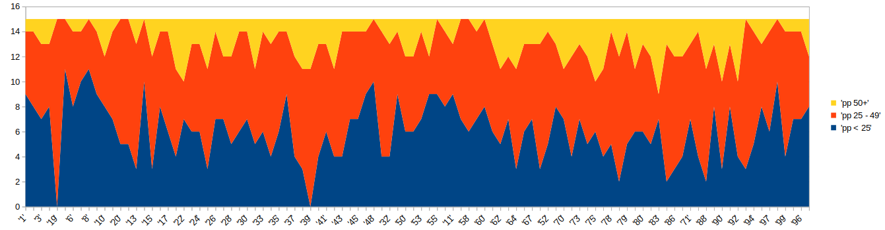
Avec deux exceptions, chaque volume de la LAE fournissait des pièces de taille assortie. Une des exceptions (vol 19) est un volume évidemment conḉu comme hommage à J.R. Planché, ne contenant que son oeuvre
"Fraicheur"
La datation d'une pièce n'est ni evidente ni certaine, mais la plus fiable serait la date de sa première représentation
Nous calculons cette date pour chaque volume, et ensuite nous notons combien des pièces contenues sont agées de moins de 5 ans (en bleu), plus de 20 ans (en orange), et entre les deux (en rouge)
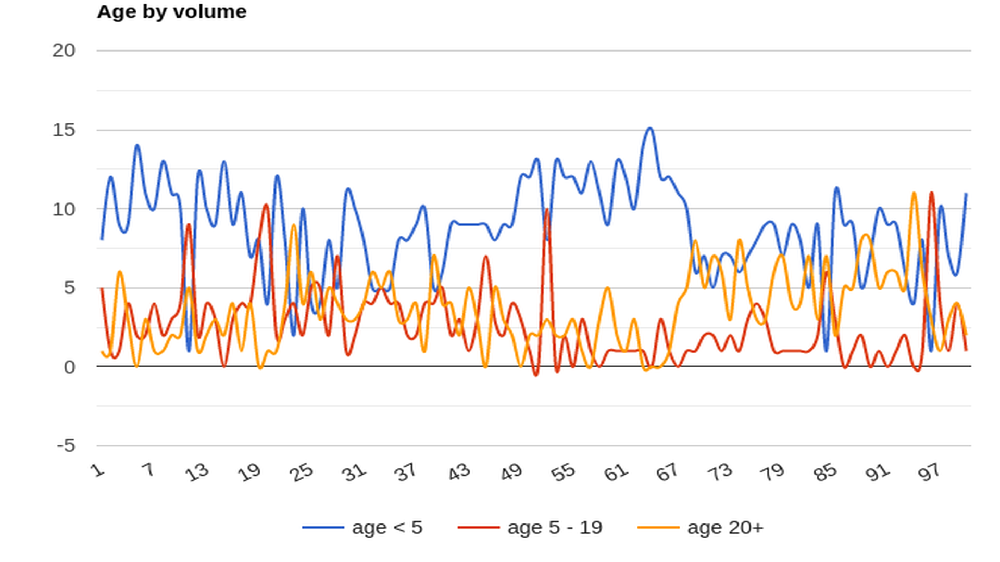
Sauf quelques exceptions, la plupart des volumes contient majoritairement des pièces récentes. Mais la proportion de pièces plus anciens semble s'accroitre après vol 60
Genre
On peut classer les pièces selon un taxinomie basique (("drame", "comedie", "farce", "tragedie", "opera", "burlesque" ...) ou selon sa description dans les sources ("Patriotic Effusion", "Dramatic Equestrian Spectacle", "Grand Comic Romantic Operatic Melo-Dramatic Fair Extravaganza" ...)
Nicoll nous fournit une classification toute faite ... mais qui semble confondre les deux methodes de classification. Et plusieurs valeurs utilisés dans les notices ne sont pas explicités dans sa taxinomie. On trouve par exemple "Past." (Pastoral), "Past.D." (Drama pastorale), "Past.O." (Opera pastorale), et "Pasticcio" (?).
J'ai essayé de simplifier un peu en regroupant les "types" de Nicoll en des classes plus larges.
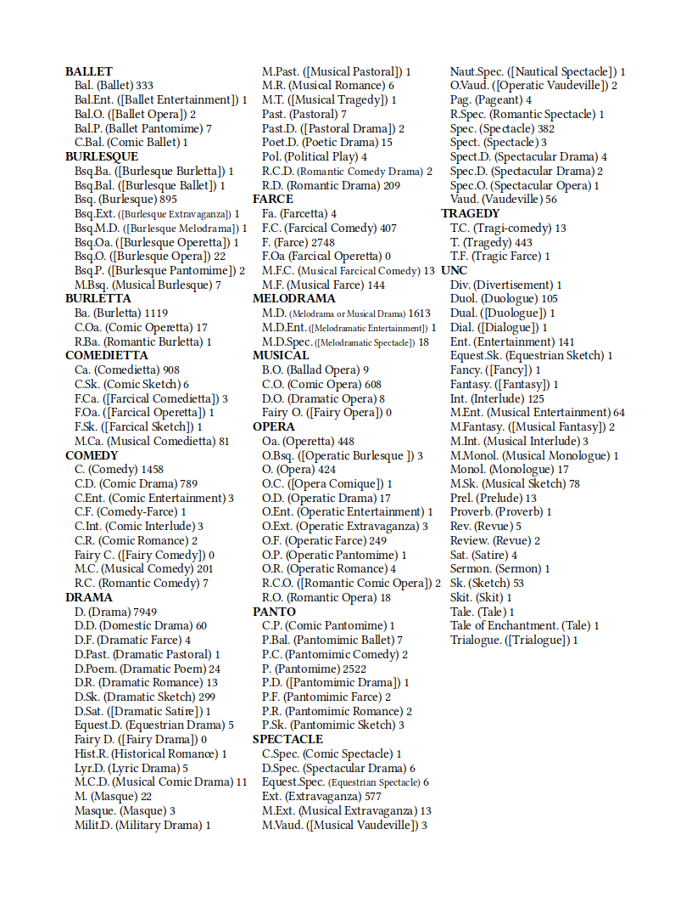
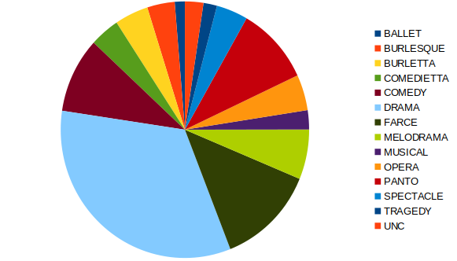
Distribution de genre des représentations constatées par Nicoll
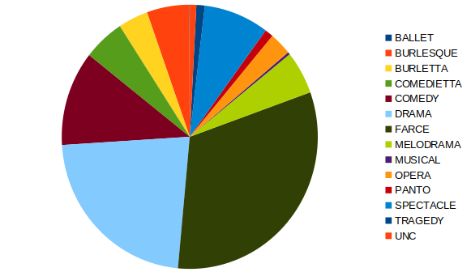
Distribution de genre des titres édités par Lacy
Evidemment, Lacy a des préférences. Par ex, le pantomime et les spectacles sont relativement défavorisés, peut etre parce qu'il fallait un budget sérieux pour les monter...
L'évolution des préférences théatrales
En visualisant la distribution des genres préférés par décennie, on peut tracer l'évolution de la mode (ou du gout) populaire
On peut aussi comparer les chiffres dans LAE et selon Nicoll.
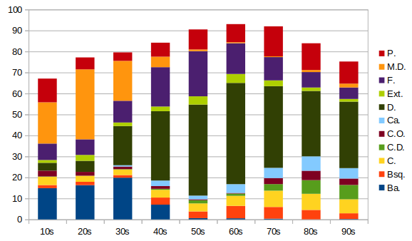
% Distribution (par décennie) des types Nicoll le plus fréquent
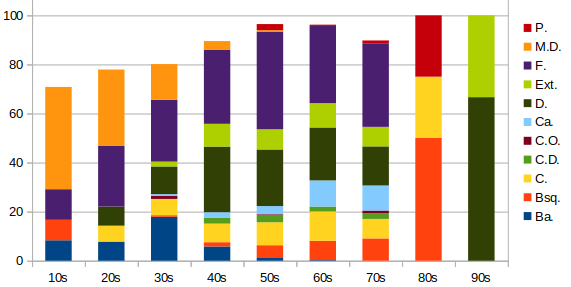
% Distribution (par décennie) des types Nicoll le plus fréquent (LAE)
Deux problèmes: il y a plusieurs types de basse fréquence qui ne sont pas pris en compte; les données manquent pour quelques décennies
Avec regroupement des types en classes ...
Est-ce que la séléction de Lacy est représentative ?
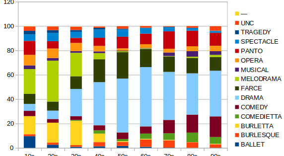
% Distribution (par décennie) de "classes" de types (toutes)
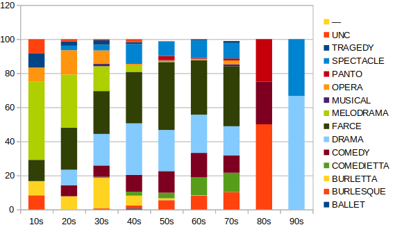
% Distribution (par décennie) de "classes" de types (LAE)
Disponibilité des versions imprimées
On trouve des copies de la LAE plus ou moins complète à plusieurs grand bibliothèques, notamment
Le Folger dispose d'une série complète, anciennement du Garrick Club
Les grands bibliothèques de dépôt légal, (British Library, Bodleian, etc) devrait en avoir, mais je ne trouve pas la LAE elle-meme au catalogues
Quelques autres bibliothèques disposent de séries incomplètes, par ex Aberdeen (64 vol), Michigan (94 vol)
On trouve des copies des pièces individuelles dans quelques collections spécialisées, par exemple:
Au BU de Warwick, la "Hall Collection of Prompt Books" : presque 600 livrets de souffleur anciennement appartenant à une actrice professional, dont 102 titres proviennent de la LAE
Au BU de Californie, la "Playscript collection P200" fait mention de 347 items attribués à Lacy
Au BU de Washington, la "19th century Acting Editions Collection" à catalogué 363 items de la LAE
Avant Google Books, il y avait ...
Entre l'imprimé et la numérisation de masse, il y avait une fois d'autre formats de distribution, notamment:
les collections de préservation sous microforme: par exemple "English and American Drama of the 19th century" (1997)
les publications encyclopédiques, souvent dérivées des microforme, mais vendues par souscription online ou éventuellement utilisant d'autre média tels que CD ROM: par exemple Chadwyck Healey "LION: Literature on Line"
"distribution" limitée principalement aux bibliothèques riches
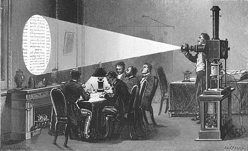
Disponibilité des versions numériques
On peut rechercher une version numérisée d'un titre spécifique aupres des "usual suspects" (Google, Hathi Trust, Online Books ... ) mais le vrai challenge est d'assembler une liste complète des titres de la LAE qui ont déja étés numérisées, et de la télécharger.
Après plusieurs mois de travaux fastidieux et pénibles, j'ose dire que l’identification des versions de la LAE déjà numérisées et (plus ou moins) disponibles est quasiment complète! Sur les 1500 titres de la LAE...
82 n'ont jamais été numérisés -- ou ne sont pas visibles
957 sont disponibles sous une seule forme
410 sont disponibles sous deux formes différentes
63 sont disponibles sous trois ou plus formes différentes
La vaste majorité de ces numérisations ne proposent que des images de page plus ou moins exacte: je n’ai trouvé qu’une soixantaine de textes déjà transcrites, soit en HTML, soit en RTF.
Le Victorian Plays Project: un récit édifiant
Financé par le AHRC entre 2005 et 2007, ce projet mené par Prof. Richard Pearson proposait la production d'une version numérique de la LAE, à partir d'une copie de la série provenant du Birmingham Library.
Le flux d'opérations adopté consistait en :
la numérisation de c. 15 000 pages (éffectuée par contrat externe) en mode image
l'OCRisation et chargement des textes en Word
une relecture initiale avec correction sous Word suivie d'une enrichissement avec des indications de la mise en forme originelle
un export en PDF
une deuxieme relecture avec corrections direct du PDF avec Acrobat
gestion, hébergement, et distribution des fichiers PDF par CMS classique
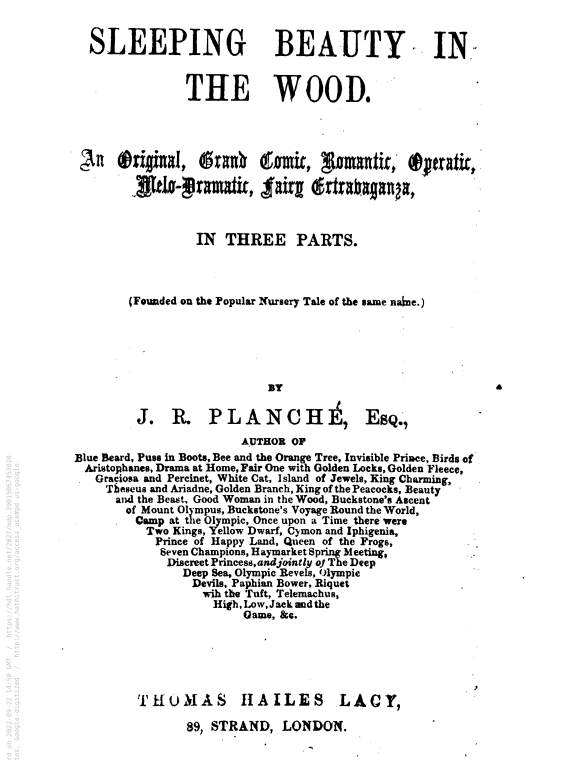
A partir de ceci...
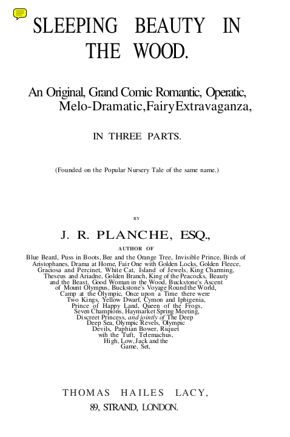
... on fait ceci
Le projet était toujours actif en 2014, lorsque Pearson se déplaçait à l'université de Galway en Irlande. A ce point, le VPP proposait 340 titres de la LAE en format PDF, respectant la mise en forme et l'apparence des originels, et accompagné d'une base de données bibliographique, le tout bénéficiant de support informatique à l'univ de Galway pour sa diffusion sur le web.
Mais en 2018 Pearson est décédé, personne s'occupait du projet, et depuis juin 2022, le site web est disparu...
Relancement du projet VPP
En avril 2022 dans le cadre du projet CLS Infra j'ai essayé de relancer un peu ce projet. J'ai récupéré tout ce qui restait disponible, à Galway et ailleurs, soit:
les documents originaux numerisés (9549 pages en tiff, pour 262 titres)
les versions corrigées par les soins du projet (342 titres en PDF moderne)
la base de données bibliographiques elaborée par le projet (en forme de pages HTML :-()
J'ai converti cette base en format TEI XML, avec plusieurs corrections, mises à jour, et enrichissements: notamment des indications des versions numériques disponibles online.
Autre objectif, un peu quichottesque, la création des versions TEI-XML de l'ensemble de la LAE
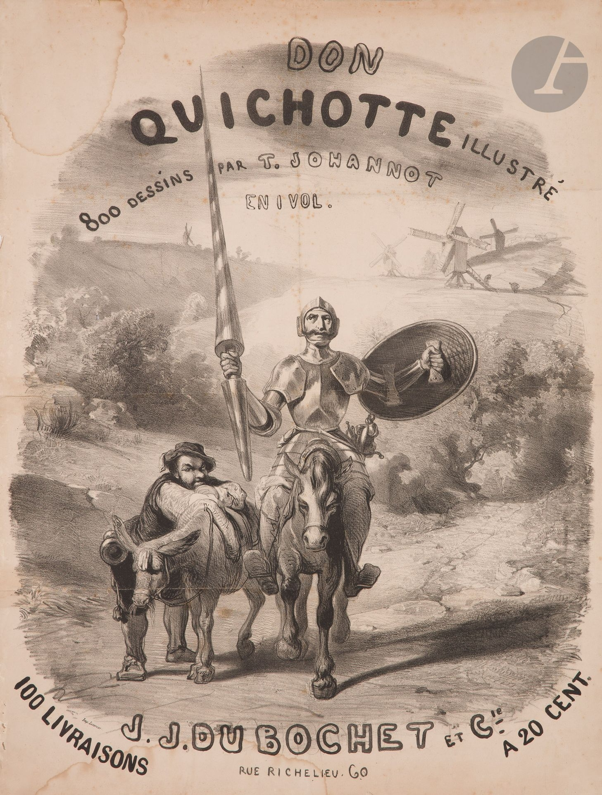
Comment faire d'une buse un epervier ...
Jusqu'a présent je n'ai trouvé aucune méthode 100% fiable de convertir les PDF du VPP en TEI-XML bien structure, dans la mesure où toutes ont nécessité un certain degré de rangement manuel, variable en termes de temps nécessaire. Et pour la conversion des PDF page-image du Hathi Trust/Google etc. la situation est encore pire.
Pour les (peu nombreuses) pieces déjà transcrites, par ex HTML du Project Gutenberg ou RTF de Chadwyck Healey, la conversion en TEI-XML semble plus simple, mais une controle du texte par rapport aux pages originales s'impose toujours.
Pour les autres, voici la solution la moins pire que j'ai adoptée ...
OCRisation du VPP-PDF avec sortie en Word (merci Huma-Num)
Conversion Word-TEI (merci TEI Stylesheets)
Amelioration de l'encodage TEI (XSLT maison)
Enrichissement du TEI Header (ibid)
Relecture du texte par rapport aux pages d'une édition source
Par ces méthodes, nous disposons actuellement de 61 pièces en TEI-XML minimal, une petite étape préliminaire vers l'établissement d'une édition numérique de la LAE...
Encodage TEI (minimal)
Nos objectifs:
faciliter l'analyse automatique des composants structurants (scènes, discours, didascalies, etc.)
défavoriser la representation des conventions typographiques
préferer un balisage simple et cohérent -- voire apauvri
permettre l'enrichissement graduel
Exemple en prose
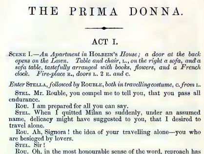
<body><head>The Prima Donna.</head><div type="act"><head>Act I.</head><stage>Scene I —An Apartment in Holbein's House a door at the back opens on the Lawn. Table
and chair L. on the right a sofa, and a sofa table, tastefully arranged with books flowers
and a French clock. Fire-place R., doors L 2 E and C. </stage><stage> Enter Stella, followed by Rouble both in travelling costume, C. from L. </stage><sp><speaker>Stel.</speaker><p>Mr Rouble you compel me to tell you that you pass all endurance.</p></sp><sp><speaker>Rou.</speaker><p>I am prepared for all you can say.</p></sp><sp><speaker>Stel.</speaker><p>When I quitted Milan so suddenly, under an assumed name, delicacy might have suggested
to you that I desired to travel alone.</p></sp><sp><speaker>Rou.</speaker><p>Ah signora ! the idea of your travelling alone—you who are besieged by lovers.</p></sp><sp><speaker>Stel.</speaker><p>Sir!</p></sp></div></body>
Exemple en vers
<body><head>The Death Of Marlowe.</head><div type="scene"><stage type="setting">Scene First. — Public Gardens — Liberty of the Clink, Southwark. </stage><stage>Enter Marlowe and Heywood, R. </stage><sp><speaker>Heywood.</speaker><l>Be sure of it.</l></sp><sp><speaker>Marlowe.</speaker><l>I am ; but not by your light.</l></sp><sp><speaker>Hey.</speaker><l>I speak it not in malice, nor in envy</l><l>Of your good fortune with so bright a beauty ; </l><l>But I have heard such things!</l></sp><sp><speaker>Marl.</speaker><l>Good Master Heywood,</l><l>I prithee plague me not with what thou'st heard; </l> ... </sp></div></body>
Encodage des pages de titre
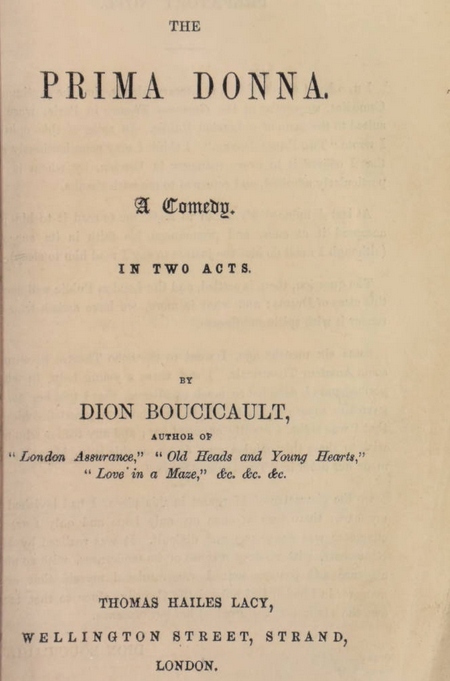
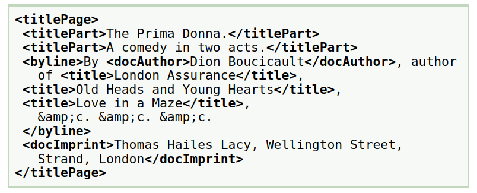
Encodage de la distribution des rôles
<performance><p>First performed at the Royal Princess's Theatre, on Saturday, September 18th, 1852.</p><castList><head>Characters</head><castItem><role gender="F">Stella</role><actor sex="F">Miss Heath.</actor></castItem><castItem><role gender="F">Margaret</role><actor sex="F">Miss
Robertson.</actor></castItem><castItem><role gender="M">Rouble</role><actor sex="M">Mr.
Walter Law.</actor></castItem><castItem><role gender="M">Eric</role><actor sex="M">Mr.
Cathcart.</actor></castItem><castItem><role gender="M">Holbein</role><actor sex="M">Mr.
Addison.</actor></castItem></castList></performance>
Exemple un peu plus complex...
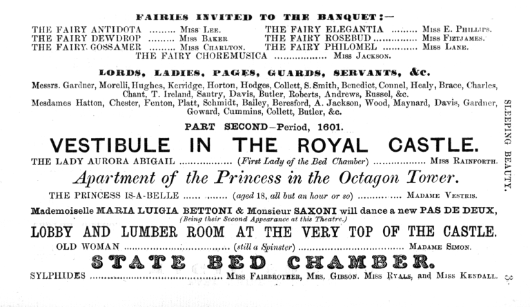
Encodage du précédant ..
<pb n="3"/><castList><head> Fairies Invited To The Banquet </head><castItem><role gender="F">The Fairy Antidota</role><actor sex="F"> Miss Lee.</actor></castItem><castItem><role gender="F">The Fairy Elegantia</role><actor sex="F">Miss E. Phillips.</actor></castItem><castItem><role gender="F">The Fairy Dewdrop </role><actor sex="F">Miss
Baker</actor></castItem><castItem><role gender="F">The Fairy Rosebud</role><actor sex="F">Miss Fitzjames.</actor></castItem><castItem><role gender="F">The Fairy Gossamer</role><actor sex="F">Miss Charlton.</actor></castItem><castItem><role gender="F">The Fairy
Philomel</role><actor sex="F">Miss Lane.</actor></castItem><castItem><role gender="F">The
Fairy Choremusica </role><actor sex="F">Miss Jackson. </actor></castItem><castItem><role gender="M">Lords, Ladies, Pages, Guards, Servants, &c.</role><actor sex="M">Messrs.
Gardner, Morelli, Hughes, Kerridge, Horton, Hodges, Collett, S. Smith, Benedict, Connel, Healy,
Brace, Charles, Chant, T. Ireland, Santry, Davis, Butler, Roberts, Andrews, Russel,
&c.</actor><actor sex="F"> Mesdames Hatton, Chester, Fenton, Platt, Schmidt, Bailey,
Beresford, A. Jackson, Wood, Maynard, Davis, Gardner, Goward, Cummins, Collett, Butler,
&c.</actor></castItem></castList><castList><head>Part Second-Period, 1601. Vestibule In
The Royal Castle.</head><castItem><role gender="F"> The Lady Aurora
Abigail</role><roleDesc>(First Lady of the Bed Chamber)</roleDesc><actor sex="F"> Miss.
Rainforth.</actor></castItem></castList><castList><head> Apartment of the Princess in the
Octagon Tower, </head><castItem><role gender="F">The Princess Is-A-Belle
</role><roleDesc>(aged 18, all but an hour or so)</roleDesc><actor sex="F">Madame Vestris.
</actor></castItem></castList><p> Mademoiselle Maria Luigia Bettoni & Monsieur Saxoni will dance a new Pas De Deux,
(Being their Second Appearance at this Theatre.) </p><castList><head>Lobby And Lumber Room At
The Very Top Of The Castle.</head><castItem><role gender="F"> Old Woman</role><roleDesc>(still
a Spinster)</roleDesc><actor sex="F">Madame Simon.</actor></castItem></castList><castList><head> State Bed Chamber. </head><castItem><role gender="F"> Sylphides.</role><actor sex="F">Miss Fairbrother, Mrs. Gibson. Miss Ryals, and Miss Kendall.</actor></castItem></castList>
Perspectives et travaux en cours
associer chaque item du catalogue Lacy avec une notice Nicoll (restent c. 250 cas mystérieux)
améliorer la structuration des notices Nicoll (par ex. distinguer les adaptations; distinguer les renvois)
améliorer l'affichage des textes TEI sur le site
continuer la conversion en TEI des textes
repenser la méthode d'encoder en TEI (essayer FETE? IA?)